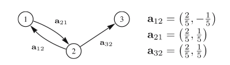
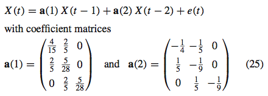
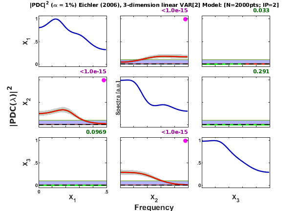
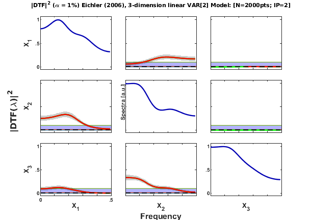
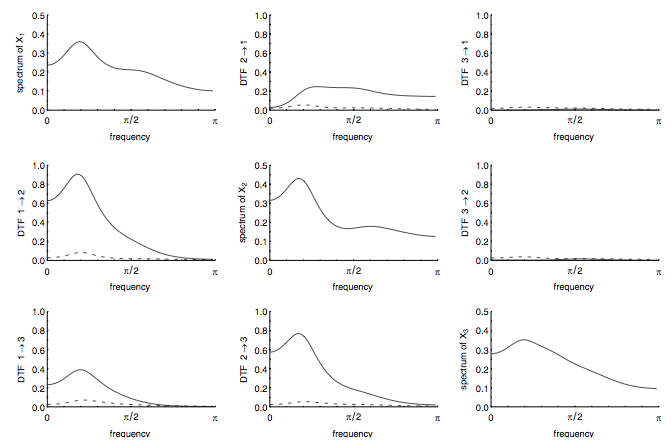

EICHLER (2006) 3-dimension VAR[2]
DESCRIPTION:
Three dimension linear VAR[2] Model
x1<-->x2 x2-->x3
Eichler et al. 2006) On the evaluation of information flow in multivariate systems
by the directed transfer function. Biol Cybern *94*: 469--482<http://dx.doi.org/10.1007/s00422-006-0062-z>
Example - Three-dimension VAR[2].
Contents
clc; format compact
Interaction diagram

Reproduced from Figure 4 in Eichler (2006) (Biol Cybern (2006) 94:469--482, 2006).
Equation (25) of Eichler (2006)

Data generation
nDiscard = 5000; % number of points discarded at beginning of simulation nPoints = 2000; % number of analyzed samples points flgManual = 0; u = feichler2006_ex1(nPoints, nDiscard, flgManual); chLabels = {'X_1';'X_2';'X_3'}; %or %chLabels = []; fs = 1; % Normalized frequency
======================================================================
Three dimensional linear VAR[3] Model
Eichler, 2006.
x1-->x2 x2-->x1 x2-->x3
======================================================================
Assigned "sum(100*clock)" initial state.2
======================================================================
Data pre-processing: detrending and normalization options
flgDetrend = 1; % Detrending the data set flgStandardize = 0; % No standardization [nChannels,nSegLength] =size(u); if nChannels > nSegLength, u = u.'; [nChannels,nSegLength]=size(u); end; if flgDetrend, for i=1:nChannels, u(i,:)=detrend(u(i,:)); end; disp('Time series were detrended.'); end; if flgStandardize, for i=1:nChannels, u(i,:)=u(i,:)/std(u(i,:)); end; disp('Time series were scale-standardized.'); end;
Time series were detrended.
MVAR model estimation
maxIP = 30; % maximum model order to consider. alg = 1; % 1: Nutall-Strand MVAR estimation algorithm criterion = 1; % 1: AIC, Akaike Information Criteria alpha = 0.01; disp('Running MVAR estimation routine.') [IP,pf,A,pb,B,ef,eb,vaic,Vaicv] = mvar(u,maxIP,alg,criterion); disp(['Number of channels = ' int2str(nChannels) ' with ' ... int2str(nSegLength) ' data points; MAR model order = ' int2str(IP) '.']);
Running MVAR estimation routine. maxOrder limited to 30 IP=1 vaic=45972.413711 IP=2 vaic=45635.606742 IP=3 vaic=45645.559607 Number of channels = 3 with 2000 data points; MAR model order = 2.
Testing for adequacy of MAR model fitting through Portmanteau test
h = 20; % testing lag MVARadequacy_signif = 0.05; % VAR model estimation adequacy significance % level aValueMVAR = 1 - MVARadequacy_signif; % Confidence value for the testing flgPrintResults = 1; [Pass,Portmanteau,st,ths] = mvarresidue(ef,nSegLength,IP,aValueMVAR,h,... flgPrintResults);
====================================================================================================
MVAR RESIDURES TEST FOR WHITENESS
----------------------------------------------------------------------------------------------------
(**) Poor MAR model fitting:
Residues white noise hypothesis was rejected.
Pass = 0.0777778
st = 210.603
Granger causality test (GCT) and instantaneous GCT
gct_signif = 0.01; % Granger causality test significance level igct_signif = 0.01; % Instantaneous GCT significance level flgPrintResults = 1; % Flag to control printing gct_alg.m results on command window. [Tr_gct, pValue_gct] = gct_alg(u,A,pf, gct_signif,flgPrintResults); [Tr_igct, pValue_igct] = igct_alg(u,A,pf,igct_signif,flgPrintResults);
====================================================================================================
GRANGER CAUSALITY TEST
----------------------------------------------------------------------------------------------------
Connectivity matrix:
NaN 1 0
1 NaN 0
0 1 NaN
Granger causality test p-values:
NaN 0 0.4514
0 NaN 0.8269
0.9187 0 NaN
====================================================================================================
INSTANTANEOUS GRANGER CAUSALITY TEST
----------------------------------------------------------------------------------------------------
Instantaneous connectivity matrix:
NaN 0 0
0 NaN 0
0 0 NaN
Instantaneous Granger Causality test p-values:
NaN 0.5393 0.2190
0.5393 NaN 0.1593
0.2190 0.1593 NaN
>>>> Instantaneous Granger Causality NOT detected.
====================================================================================================
Original PDC estimation
PDC analysis results are saved in c structure.
nFreqs = 128; metric = 'euc'; alpha = 0.01; c = asymp_pdc(u,A,pf,nFreqs,metric,alpha); % Estimate PDC and asymptotic statistics c.Tragct = Tr_gct; c.pvaluesgct = pValue_gct;
Matrix-Layout Plot
flgColor = [1]; w_max=fs/2; flgPrinting = [1 1 1 2 3 0 1]; % plot spectra main diagonal and print GCT p-values strID = 'Eichler(2006) Linear model'; strTitle = ['Eichler (2006), 3-dimension linear VAR[2] Model: [N=' ... int2str(nSegLength) 'pts; IP=' int2str(c.p) ']']; [h1,~,~] = xplot(strID,c,flgPrinting,fs,w_max,chLabels,flgColor); xplot_title(alpha,metric,'pdc',strTitle);
Original DTF estimation
DTF analysis results are saved in d structure. See asymp_dtf.m for detail.
nFreqs = 64; d = asymp_dtf(u,A,pf,nFreqs,metric,alpha);
Matrix Layout Plot
flgPrinting = [1 1 1 2 0 0 1]; % plot linear spectra on main diagonal flgColor = [1]; w_max=fs/2; [h2,~,~] = xplot(strID,d,flgPrinting,fs,w_max,chLabels,flgColor); xplot_title(alpha,metric,'dtf',strTitle);
Result from the original article, Eichler (2006)
Figure 5, page 476.

This completes Eichler (2006) VAR[3] Example 1.